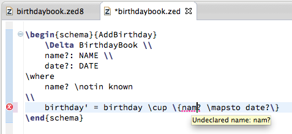
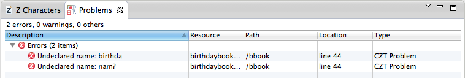
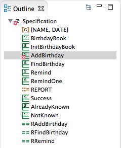

After the current editing specification is parsed and typechecked, the editor will report the problems to the user in several ways.
Display the problem markers within/around the editor

By hovering on the problem indicators, you can see the description about the problem.
Add problem entries to the Problems view

Each problem entry shows you the location, as well as the description, of the corresponding problem.
Display error indicators in the Outline view

The problem marker on an Outline entry means that the underlying term of the entry contains problems.